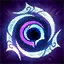
Marca da Kindred
Passiva
Os Kindred marcam alvos para Caçar. Concluir uma Caçada fortalece permanentemente as habilidades básicas deles. A cada 4 caçadas concluídas, o Alcance de Ataque também aumenta.

Distintos, mas nunca separados, os Kindred representam as essências gêmeas da morte. O arco da Ovelha propicia uma rápida transição do mundo mortal para aqueles que aceitam seu destino. O Lobo caça aqueles que fogem de seu fim, entregando-lhes a violência derradeira de suas presas esmagadoras. Embora diferentes interpretações sobre a natureza dos Kindred circulem por toda Runeterra, todo mortal deve escolher a verdadeira face de sua morte.
Função
Atirador
Dificuldade
Média
Região
Runeterra
Rota
Caçador

Passiva
Os Kindred marcam alvos para Caçar. Concluir uma Caçada fortalece permanentemente as habilidades básicas deles. A cada 4 caçadas concluídas, o Alcance de Ataque também aumenta.
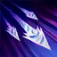
Q
Os Kindred rolam e disparam até três flechas em alvos próximos.
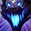
W
O Lobo se enraivece e ataca inimigos à sua volta. A Ovelha ganha acúmulos passivamente ao se mover e atacar. Quando totalmente carregado, o próximo ataque da Ovelha recupera Vida..
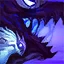
E
A Ovelha faz um disparo cuidadoso, reduzindo a velocidade de seu alvo. Se a Ovelha atacar o alvo mais duas vezes, seu próximo ataque fará com que o Lobo salte no inimigo, golpeando-o e causando muito dano.
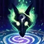
R
A Ovelha concede refúgio contra a morte para todos os seres vivos em uma área. Até que seu efeito acabe, nada pode morrer. No fim de sua duração, as unidades são curadas.
Kindred é composto por duas entidades distintas: Lamb (a Ovelha) e Wolf (o Lobo). Lamb representa uma morte pacífica, oferecendo um fim rápido e indolor com suas flechas para aqueles que aceitam seu destino. Já Wolf personifica uma morte violenta, perseguindo e devorando os que tentam fugir do fim inevitável. Essa dualidade reflete as escolhas que os mortais enfrentam diante da morte, tornando Kindred uma representação única do conceito de mortalidade em Runeterra.
Segundo lendas de Runeterra, Kindred já foi uma única entidade conhecida como o "Homem Cinzento", uma figura solitária associada à morte. Para acabar com sua solidão, ele se dividiu em duas partes: Lamb (a razão) e Wolf (o instinto). Essa história é reforçada por interações com outros campeões, como Fiddlesticks, que se refere a Kindred como o "Homem Cinzento".
No jogo, Kindred possui um sistema de marcas de caça (Mark of the Kindred). Lamb pode marcar campeões inimigos para caçar, enquanto Wolf marca monstros da selva. Abater os alvos marcados concede buffs permanentes, aumentando o alcance de ataque e o poder de Kindred. Essa mecânica incentiva jogadores a adotarem um estilo de jogo agressivo e estratégico, combinando com o tema de caçadores eternos.
Kindred não é a única personificação da morte em Runeterra. Eles têm ligações com:
Kindred não é apenas uma personificação da morte no universo de League of Legends – eles são uma parte viva (ou melhor, morta) da cultura de vários povos de Runeterra, com interpretações diferentes dependendo da região:
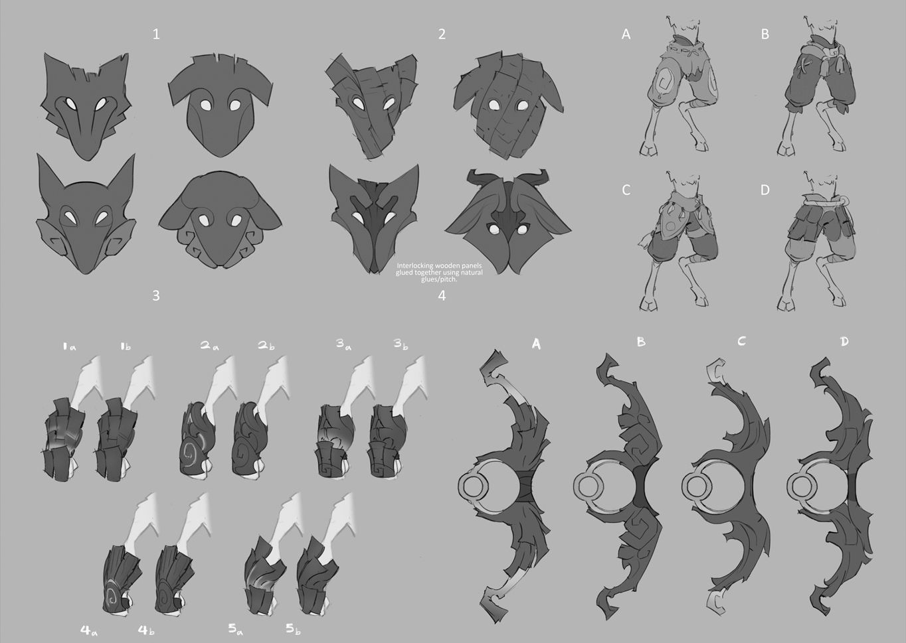
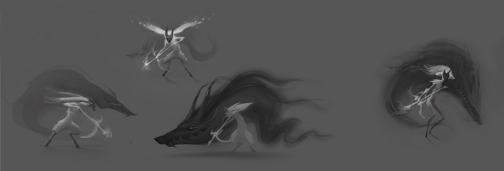
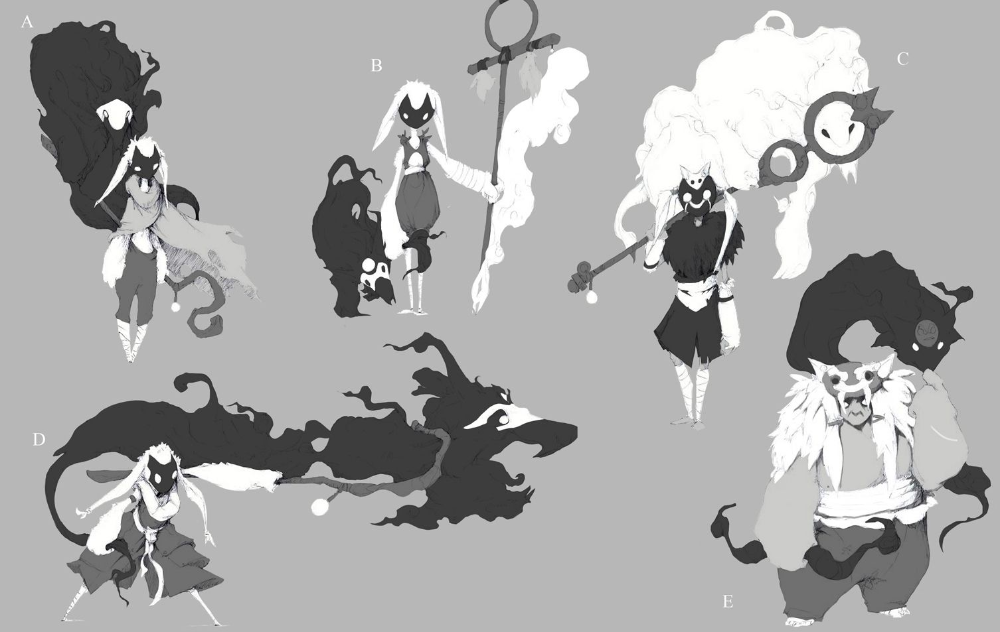
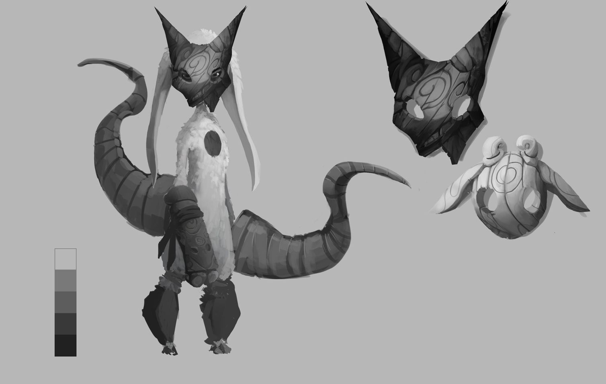
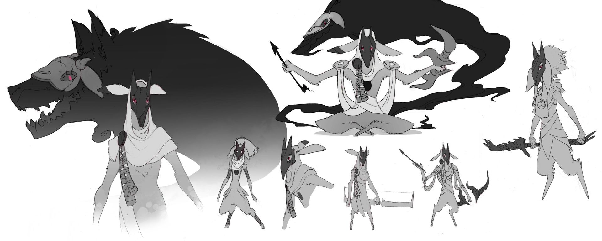
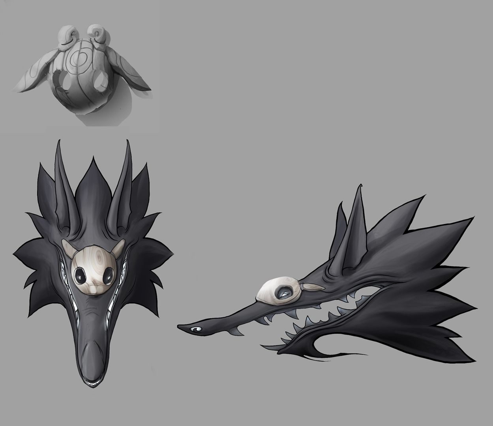

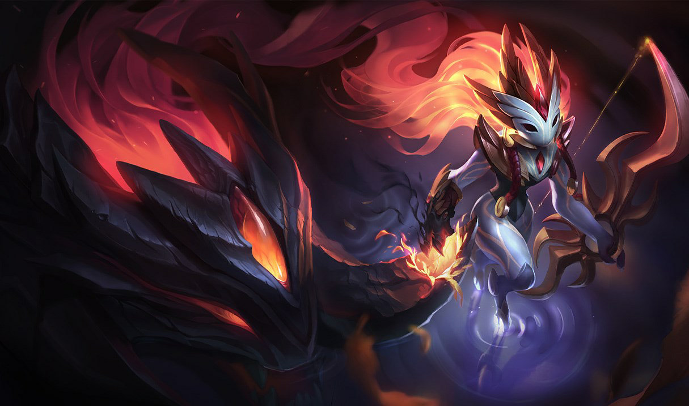
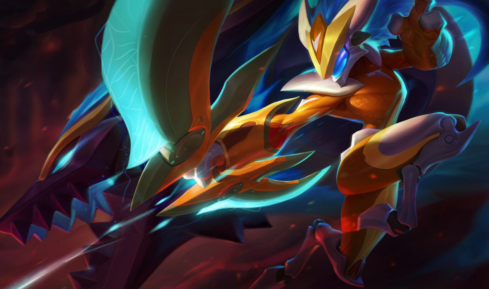

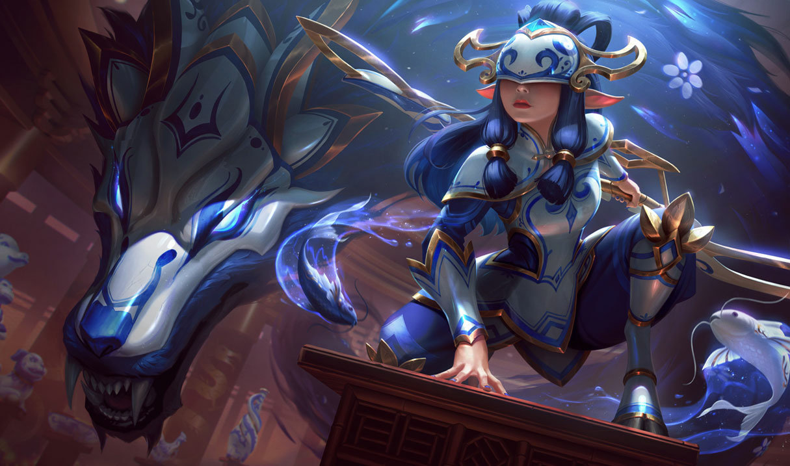
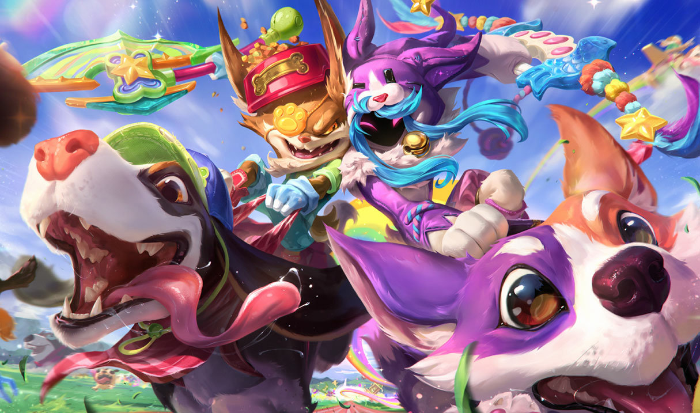
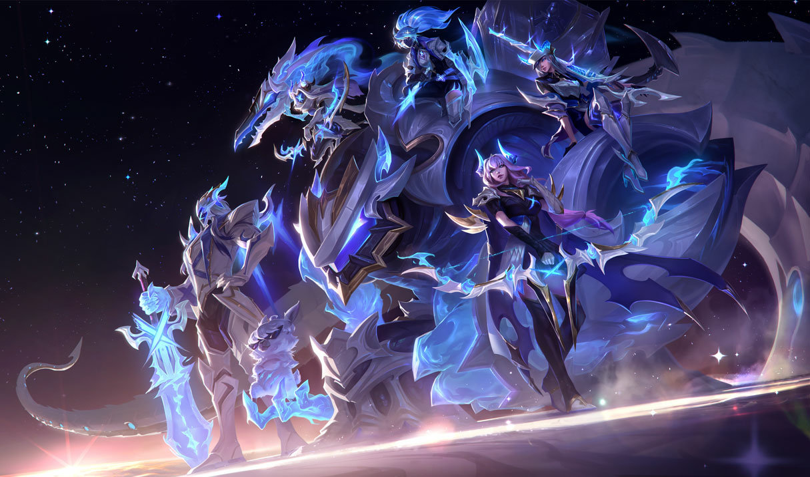
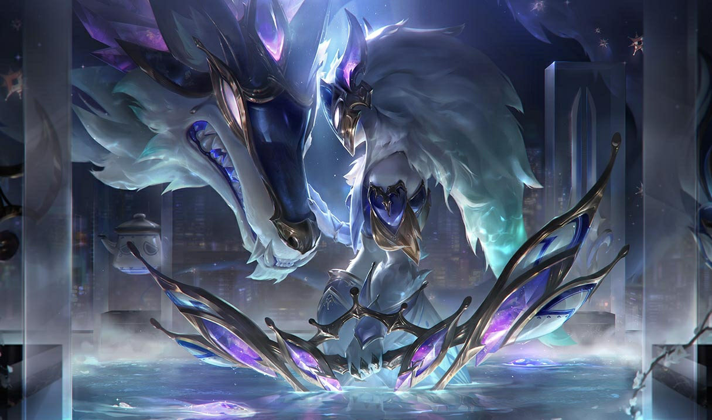
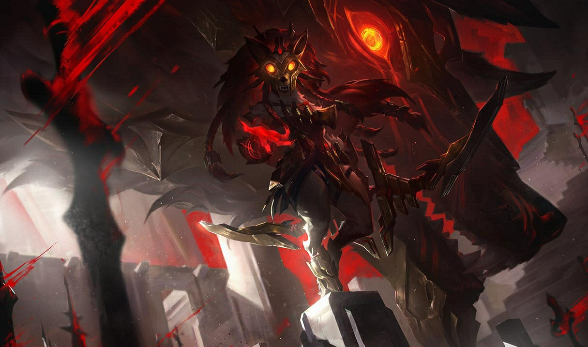
Distintos, mas nunca separados, os Kindred representam as essências gêmeas da morte. O arco da Ovelha oferece um desprendimento rápido do mundo mortal para aqueles que aceitam seu destino. O Lobo caça aqueles que fogem de seu fim, entregando-lhes a violência derradeira de suas presas esmagadoras. Embora interpretações diferentes da natureza dos Kindred variem por toda Runeterra, todo mortal deve escolher a verdadeira face de sua morte
Ler Historia ➜A batalha caiu sobre eles como se fosse um banquete. Vidas deliciosas — tantas a acabar e tantas a se caçar! O Lobo avançou pela neve enquanto a Ovelha dançava graciosamente de gume de espada a ponta de lança; a carnificina sangrenta incapaz de manchar sua pelagem pálida.
Ler Historia ➜Tarnold entendeu que a apresentação estava condenada ao fracasso quando todos os seus truques de palco se esgotaram. A ansiedade tomara conta do elenco. Talvez a culpa fosse do texto, ou das superstições que cercavam a encenação da obra inacabada de uma escriba morta, mas cada um dos atores havia sucumbido, de uma forma ou de outra, à falta de profissionalismo.
Ler Historia ➜Magga estava para morrer pela décima quarta vez. Ela mordiscou uma maçã podre — mais uma vez. Sua polpa, como sempre, a infectou com putrinumbra. A atriz fez os movimentos de cair para sua morte enquanto proferia suas palavras finais para que todos ouvissem.
Ler Historia ➜